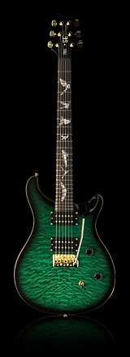

Paul Allender, lead guitarist of the band Cradle of Filth, is known for his unique style. Paul didn’t take any lessons when he was starting out on the guitar. This allowed him to develop his own style very quickly. With his strict right hand rhythm technique and his chromatic writing style, Paul Allender’s sound is easily identifiable.
Paul started playing PRS when he left Cradle of Filth and started the band, the Blood Divine. He purchased a second hand CE-24 and used it exclusively throughout the band’s days and brought it with him when he rejoined Cradle of Filth at the turn of the century. He then sent a design of his own to PRS. It featured a purple and black sunburst on a curly maple top and replaced the traditional bird inlays with bats for a darker but still classic PRS look. PRS built the guitar for Allender as a private stock model, but it eventually made it to production as an SE model.
The Paul Allender SE is a 24 fret guitar with gold hardware and specially wound pickups that were designed for Paul. Paul’s PRS guitars can be heard on Cradle of Filth’s new album, Godspeed on the Devil’s Thunder.